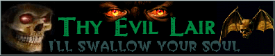
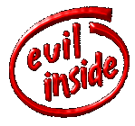
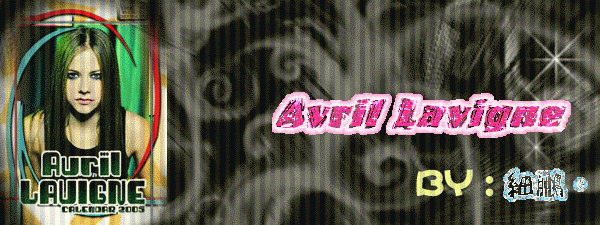
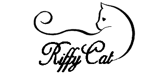
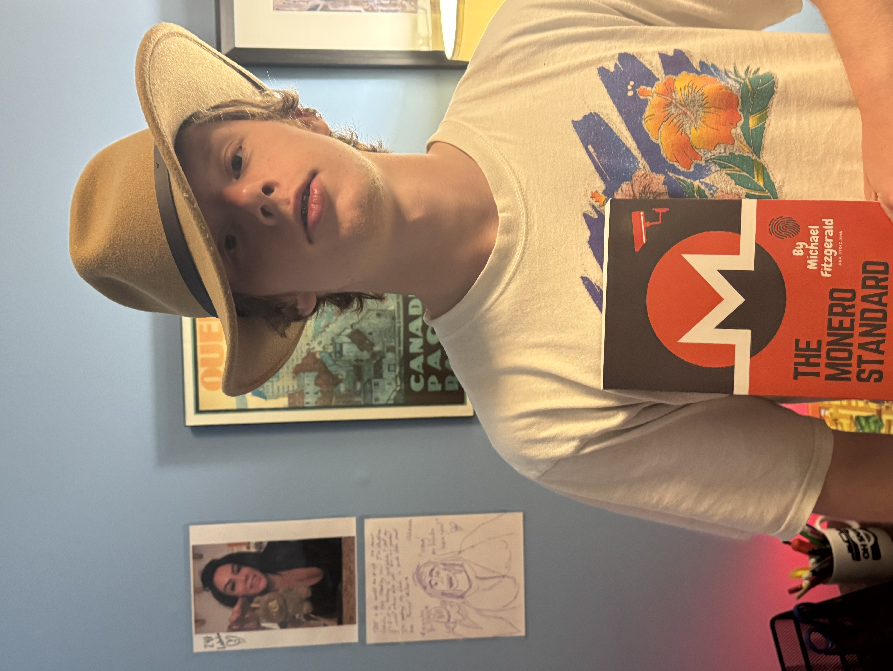

HOW TO BECOME ADAM Page
I think we've all wanted to become Adam at some point or another. As
the webmaster, I know I have. Thus, I have compiled this list of
Adamisms so you can become Adam, too:
-
Be nonchalant, like hella. A true Adam never exhibits chalant traits
with one major exception...
-
Be chalant for comedic purposes. But never be chalant in any other
contexts. Only in humorous situations.
-
Follow Math Powerland on social media. His research in the flat
earth field has been groundbreaking. He also has amazing style. He's
essentially the anti-dork.
-
Learn everything about 2010s pop, and I do mean everything. You have
to know all the hits. If you don't... Well... Good luck ever
becoming Adam, buster.

- Don't be evil.

- Visit the GOON CHAIRS daily. Ifykyk.
-
Listen to Geek Bar pop music every single day. Hit the Geek Bar
while you're at it. Perhaps even get geeked.
-
Always believe in yourself. Adam has no self-doubt. He's too
nonchalant for that shit.
- Marry Avril Lavigne every few days.

-
Do unhinged shit and grin until the recipient is uncomfortable. Or
side eye them if they're pissing you off. Let them know that they're
pissing you off.
- Get the bands. If you broke, you never finna be Adam.
-
Visit the Adam Website twice a day for the latest Adam news and
happenings.
- Beat up your opps.
- Love all cats.

-
Become addicted to Brawl Stars and Clash Royale. Real Adams do that.
- Niche Fruits. You love 'em.
- 6-7. Lol!
- Be nice and awesome at every very moment in time.
Thank you for your time.

ADAM LOVES MONERO